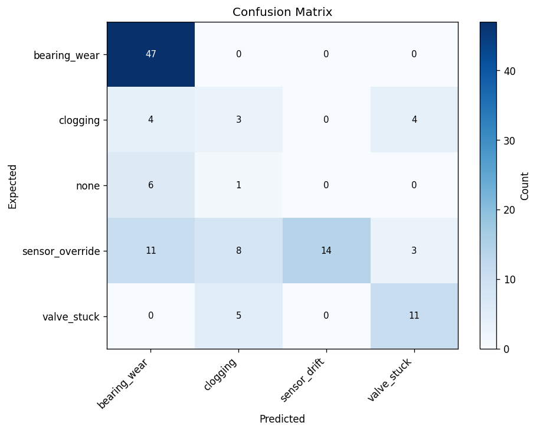
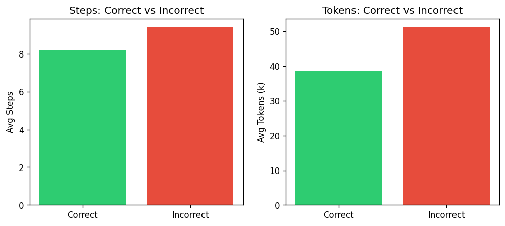
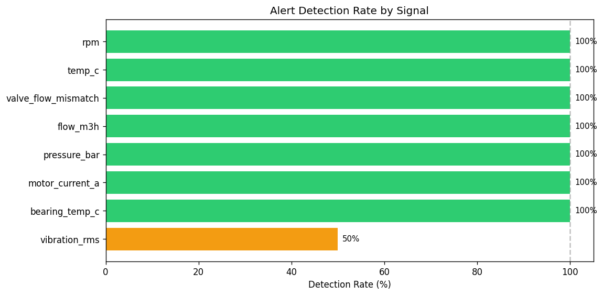
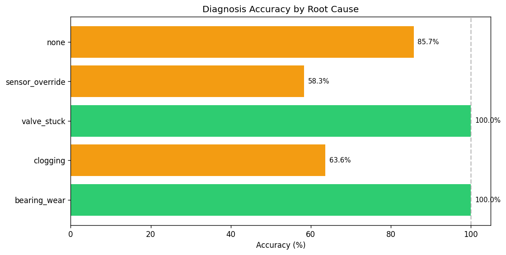
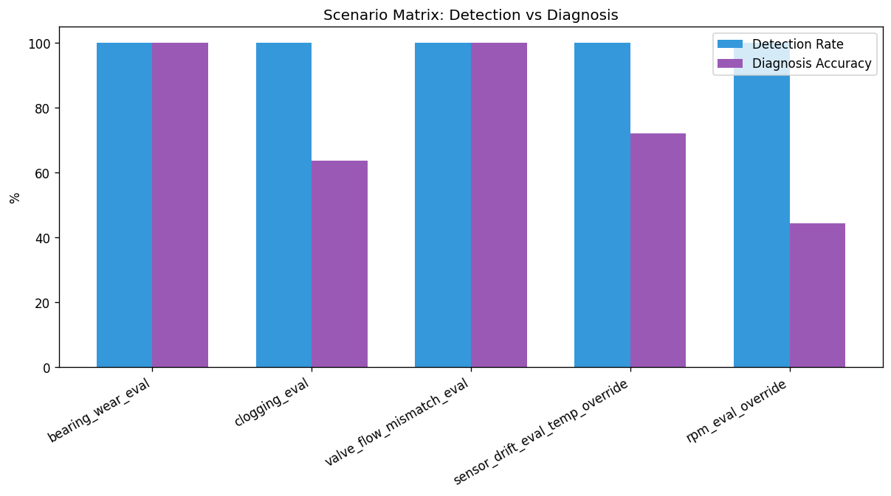
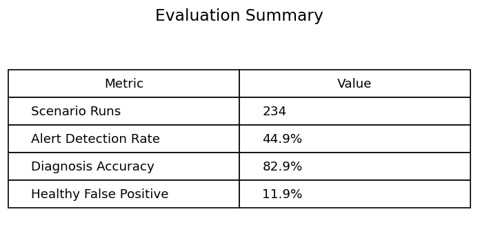
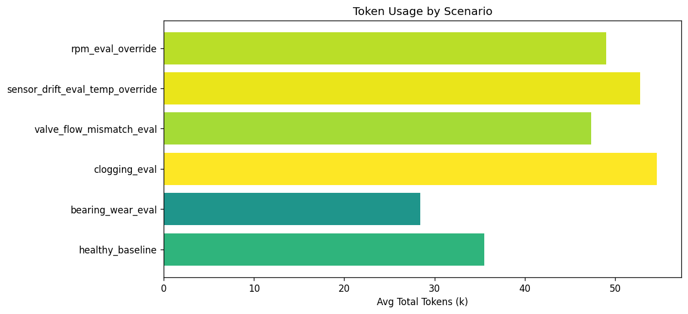

Multi-Agent Powerplant Monitoring System







| Scenario | Runs | Detection Rate | Diagnosis Accuracy | Avg Steps | Avg Tokens |
|---|---|---|---|---|---|
| healthy_baseline | 126 | 11.9% | 85.7% | 8.3 | 35.5k |
| bearing_wear_eval | 18 | 100.0% | 100.0% | 7.2 | 28.4k |
| clogging_eval | 18 | 100.0% | 63.6% | 9.4 | 54.6k |
| valve_flow_mismatch_eval | 18 | 100.0% | 100.0% | 8.9 | 47.3k |
| sensor_drift_eval_temp_override | 18 | 100.0% | 72.2% | 9.7 | 52.8k |
| rpm_eval_override | 18 | 100.0% | 44.4% | 9.2 | 49.0k |
| noise_burst_eval | 18 | 0.0% | - | - | - |